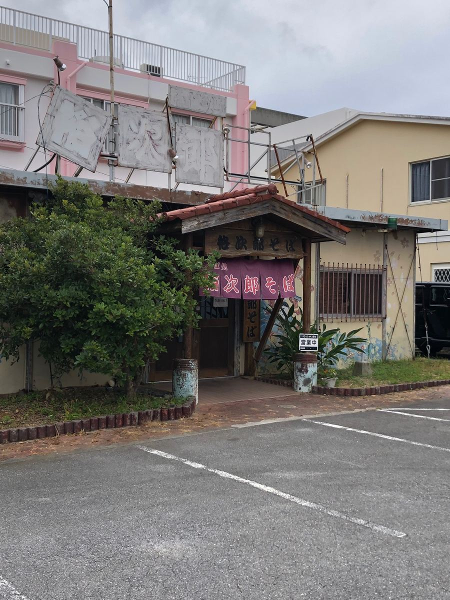
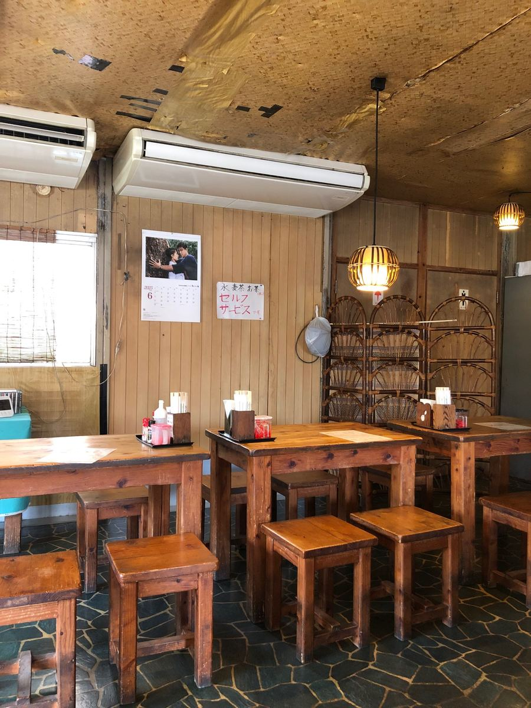
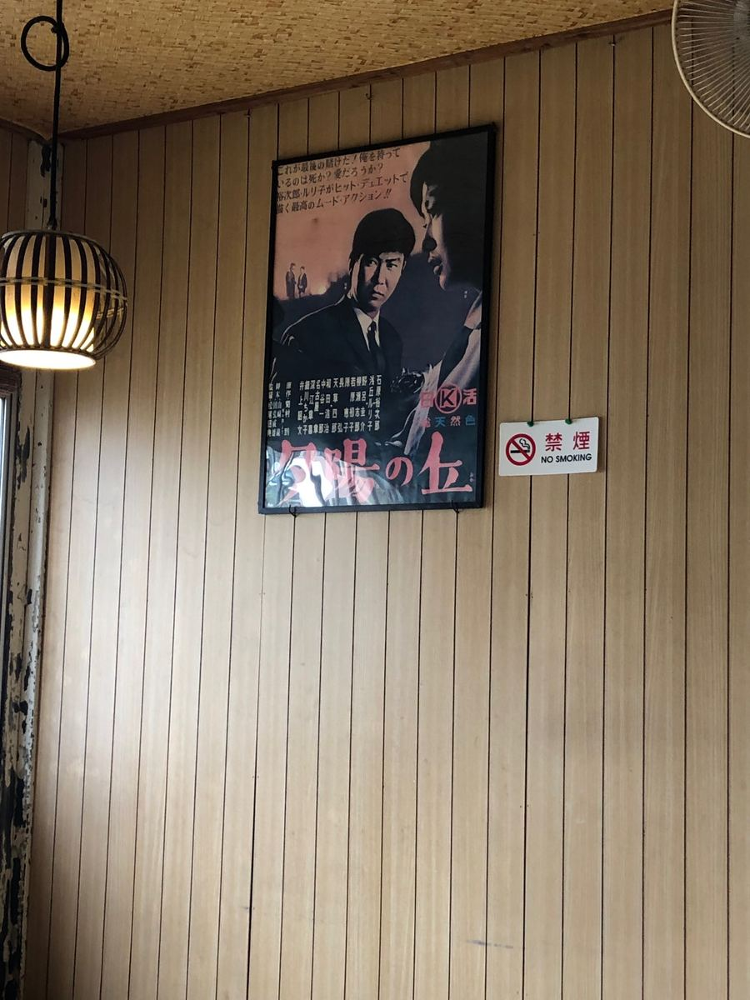
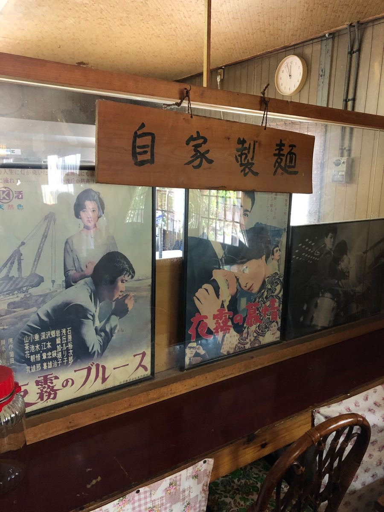
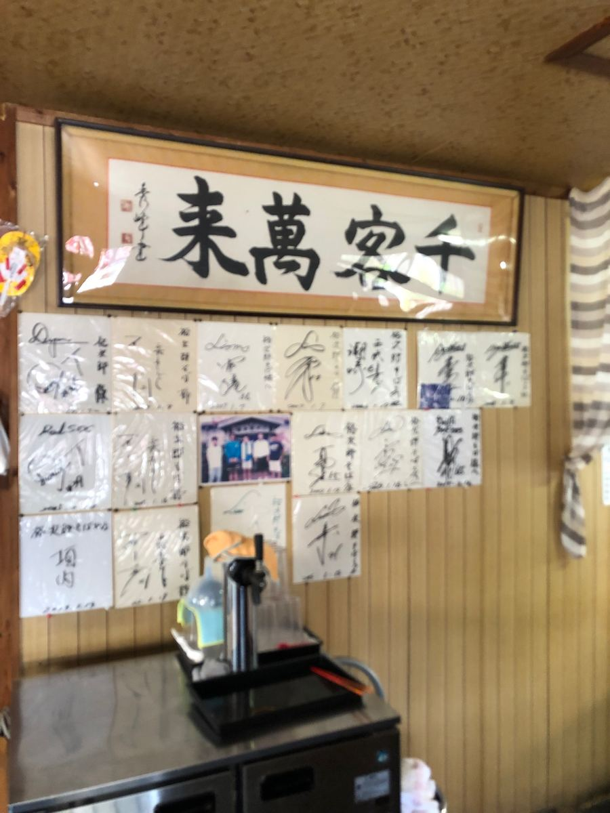
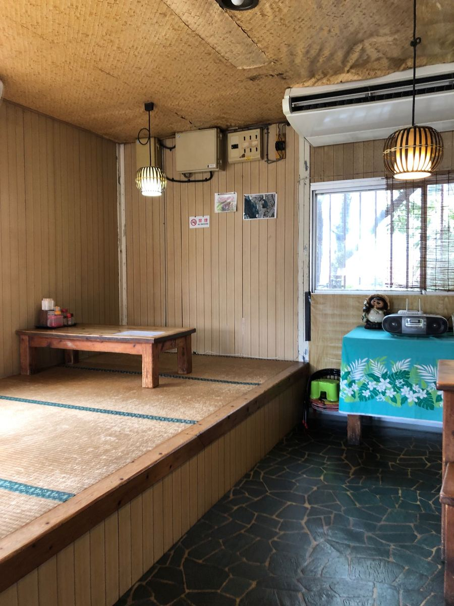
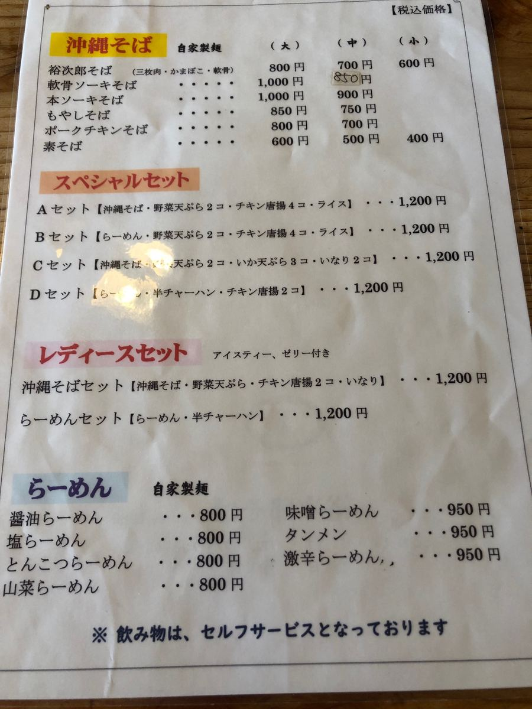
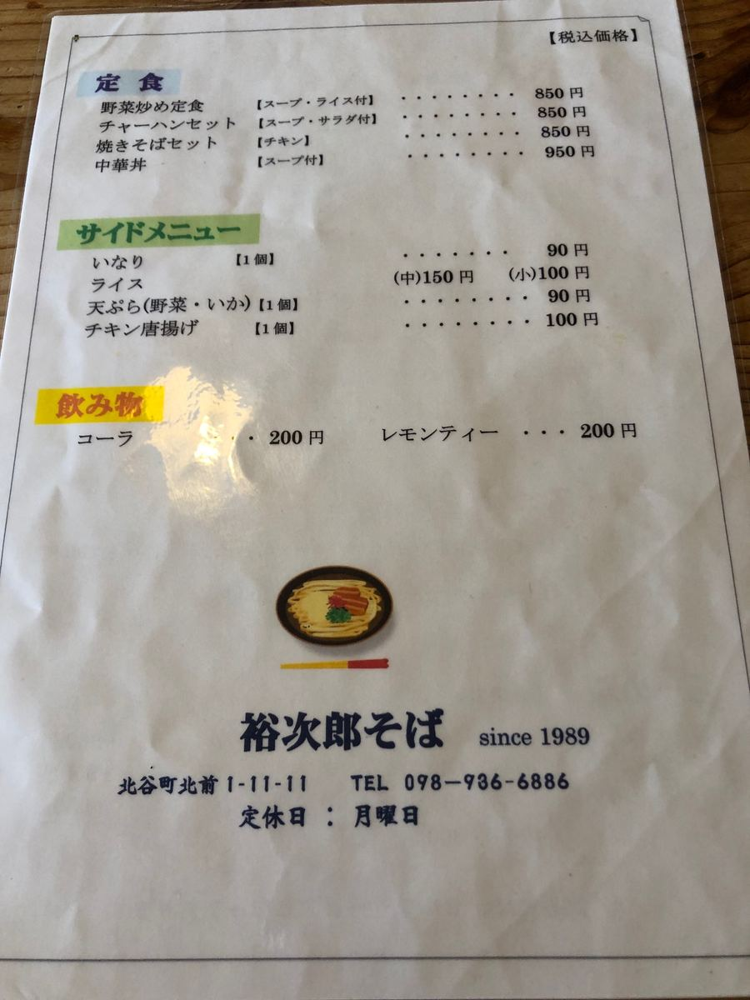
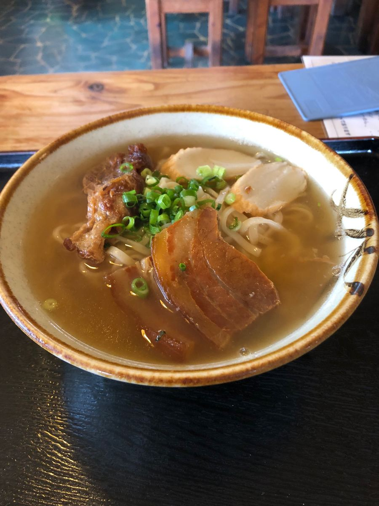
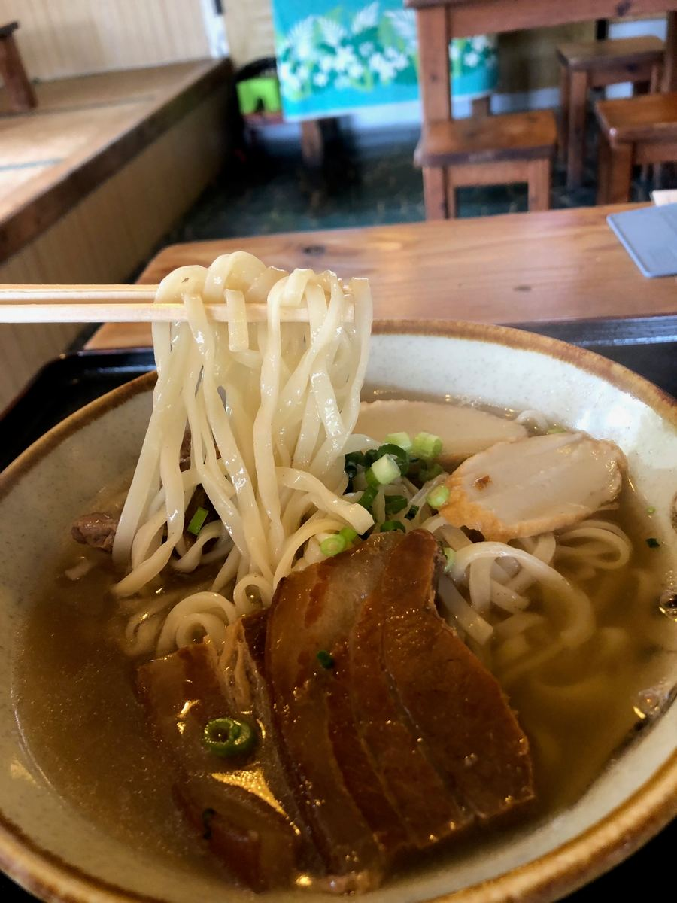

On this Okinawa soba journey, I visited "Yujiro Soba" in Kitamae, Chatan Town 🍜 I ate here in June 2025 😄

It's a solidly built shop with a red-tile roof that catches the eye. The parking lot was fairly large and it felt easy to enter.

Inside, wooden tables and round stools are lined up, with the air of a nostalgic Showa-era diner. It's a calming space, and you can't help wanting to linger in a shop like this 😊
And looking around the shop, what I noticed was the posters of Ishihara Yujiro lined up all over the wall. The shop name "Yujiro Soba" seems to come from that, and I could tell the owner is quite a Yujiro fan 😄


A wooden sign reading "in-house noodles" is also hung on the wall, showing their confidence in the noodles. A line like this raises my expectations 🤤

A splendid "Senkyaku Banrai" (a thousand customers, ten thousand visits) plaque, with countless autograph cards filling the space around it. You can tell this is a shop that has been loved for a long time.

In the back there's also a raised tatami seating area, built so that even families could relax 😊
Now looking at the menu, the Okinawa soba lineup runs Yujiro Soba, soft-bone pork rib soba, bone-in pork rib soba, bean sprout soba, pork-and-chicken soba, and plain soba. What's interesting is that, even though it's an Okinawa soba shop, there's a full ramen menu too. Soy sauce, salt, tonkotsu, mountain vegetable, miso, tanmen, and extra spicy are all there, quite a range 🍜


Set meals and set menus are plentiful too, and sides like inari and tempura are available. I hesitated, but this time I decided to have the signature menu item named after the shop, "Yujiro Soba."

This is what was brought out. A classic bowl with plenty of soup, topped with braised pork belly, soft-bone pork ribs, fish cake, and green onions ✨
First, the soup. A blended bonito and pork-bone broth, and the umami of both came through firmly. It's a balanced soup that doesn't lean only toward bonito or only toward pork bone 😋

And the in-house noodles they're proud of are medium-thin flat noodles. Beautiful, translucent noodles, boiled on the soft side 🍜
The toppings are braised pork belly and soft-bone pork ribs. Both are fairly firmly seasoned. However, I did notice a fair amount of sinewy texture, which bothered me a bit ^^;
Rating (9/15): A soup where the bonito and pork-bone blended broth is nicely balanced, with translucent in-house medium-thin flat noodles. The braised pork belly and soft-bone pork ribs are firmly seasoned. Overall, the flavor was honestly average, but the interior brimming with love for Yujiro is something you can only experience here 😊
Noodles: ★★★☆☆（3）
Soup: ★★★☆☆（3）
Toppings: ★★★☆☆（3）